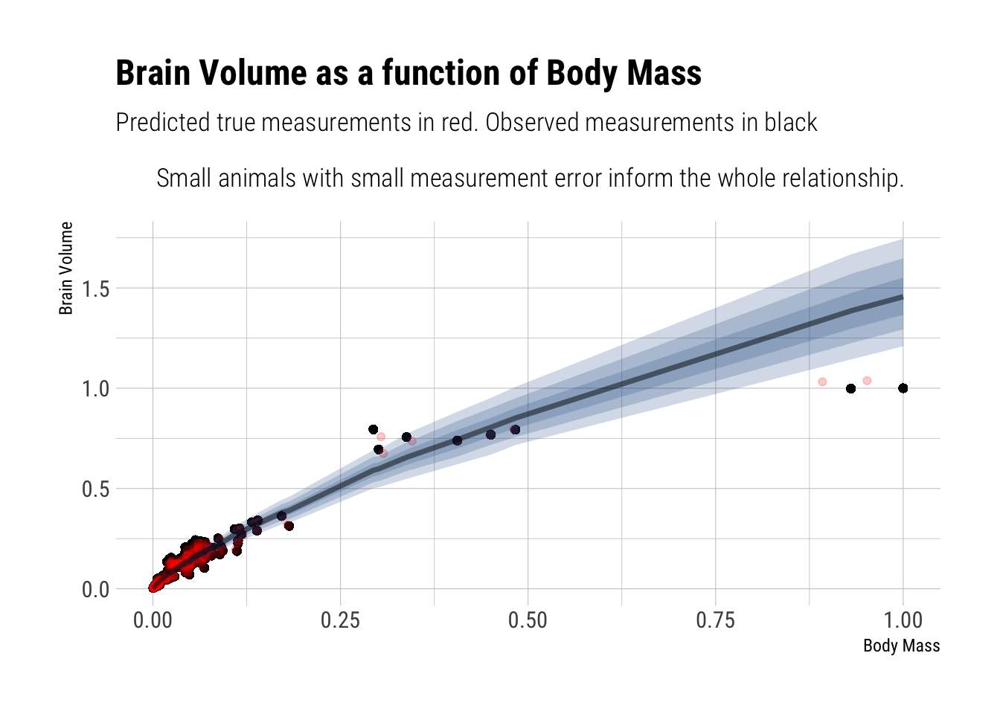
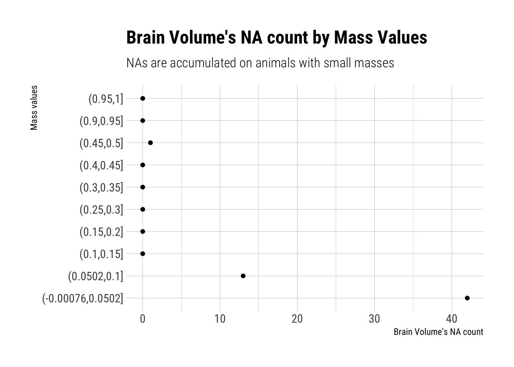
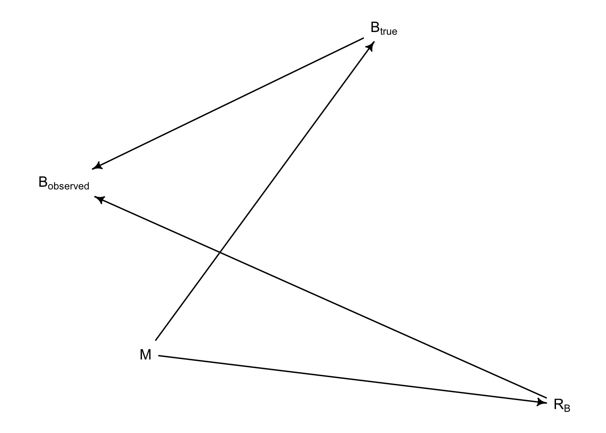
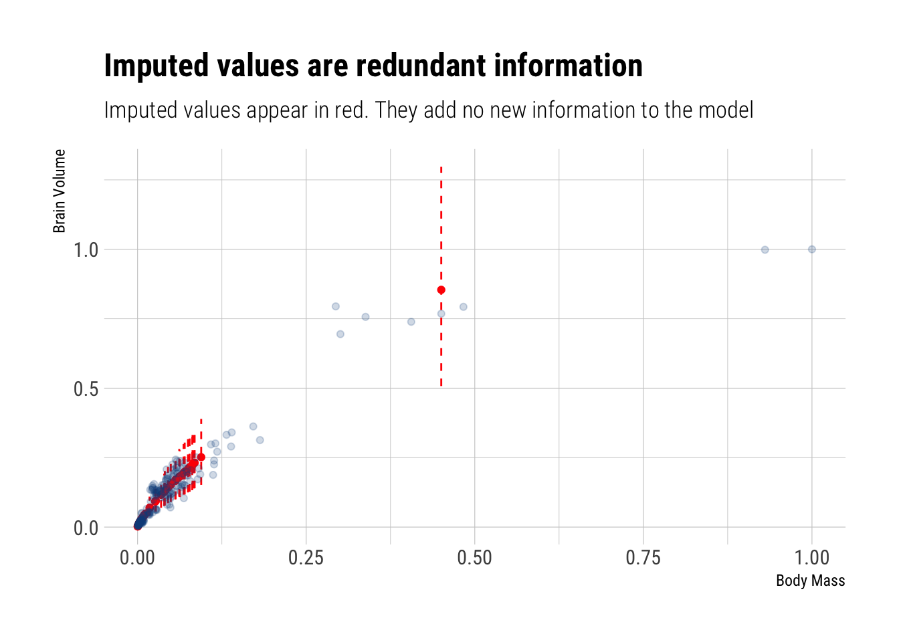

This is the final week of the best Statistics course out there. It showed the benefits of being ruthless with conditional probabilities: replace everything you don’t know with a distribution conditioned on what you do know. Bayes will do the rest. This holds for both measurement error and missing data.
1st problem
Consider the relationship between brain volume (brain) and body mass (body) in the data(Primates301). These values are presented as single values for each species. However, there is always a range of sizes in a species, and some of these measurements are taken from very small samples. So these values are measured with some unknown error.
Let’s begin by copying Richard’s code to simulate a measurement error:
Ignoring measurement error, the model is thus:
Running MCMC with 1 chain, with 1 thread(s) per chain...
Chain 1 Iteration: 1 / 1000 [ 0%] (Warmup)
Chain 1 Iteration: 100 / 1000 [ 10%] (Warmup)
Chain 1 Iteration: 200 / 1000 [ 20%] (Warmup)
Chain 1 Iteration: 300 / 1000 [ 30%] (Warmup)
Chain 1 Iteration: 400 / 1000 [ 40%] (Warmup)
Chain 1 Iteration: 500 / 1000 [ 50%] (Warmup)
Chain 1 Iteration: 501 / 1000 [ 50%] (Sampling)
Chain 1 Iteration: 600 / 1000 [ 60%] (Sampling)
Chain 1 Iteration: 700 / 1000 [ 70%] (Sampling)
Chain 1 Iteration: 800 / 1000 [ 80%] (Sampling)
Chain 1 Iteration: 900 / 1000 [ 90%] (Sampling)
Chain 1 Iteration: 1000 / 1000 [100%] (Sampling)
Chain 1 finished in 0.4 seconds.With the posterior:
mean sd 5.5% 94.5% n_eff Rhat4
a 0.4228299 0.05204509 0.3382111 0.5015443 231.8753 1.008351
b 0.7818323 0.01259683 0.7613619 0.8010810 215.4058 1.009768
sigma 0.2933987 0.01599348 0.2698708 0.3216627 202.4175 1.008526Your job is to add the measurement errors to this model. Use the divorce/marriage example in the chapter as a guide.
Solution
To handle measurement error we will state that the observed values for both M and B come from a distribution centered around true unknown values but with known measurement error (the one that Richard just simulated).
Running MCMC with 4 parallel chains...
Chain 1 Iteration: 1 / 1000 [ 0%] (Warmup)
Chain 2 Iteration: 1 / 1000 [ 0%] (Warmup)
Chain 3 Iteration: 1 / 1000 [ 0%] (Warmup)
Chain 4 Iteration: 1 / 1000 [ 0%] (Warmup)
Chain 2 Iteration: 100 / 1000 [ 10%] (Warmup)
Chain 1 Iteration: 100 / 1000 [ 10%] (Warmup)
Chain 3 Iteration: 100 / 1000 [ 10%] (Warmup)
Chain 4 Iteration: 100 / 1000 [ 10%] (Warmup)
Chain 1 Iteration: 200 / 1000 [ 20%] (Warmup)
Chain 2 Iteration: 200 / 1000 [ 20%] (Warmup)
Chain 3 Iteration: 200 / 1000 [ 20%] (Warmup)
Chain 4 Iteration: 200 / 1000 [ 20%] (Warmup)
Chain 1 Iteration: 300 / 1000 [ 30%] (Warmup)
Chain 2 Iteration: 300 / 1000 [ 30%] (Warmup)
Chain 3 Iteration: 300 / 1000 [ 30%] (Warmup)
Chain 4 Iteration: 300 / 1000 [ 30%] (Warmup)
Chain 1 Iteration: 400 / 1000 [ 40%] (Warmup)
Chain 2 Iteration: 400 / 1000 [ 40%] (Warmup)
Chain 3 Iteration: 400 / 1000 [ 40%] (Warmup)
Chain 4 Iteration: 400 / 1000 [ 40%] (Warmup)
Chain 1 Iteration: 500 / 1000 [ 50%] (Warmup)
Chain 1 Iteration: 501 / 1000 [ 50%] (Sampling)
Chain 2 Iteration: 500 / 1000 [ 50%] (Warmup)
Chain 2 Iteration: 501 / 1000 [ 50%] (Sampling)
Chain 3 Iteration: 500 / 1000 [ 50%] (Warmup)
Chain 3 Iteration: 501 / 1000 [ 50%] (Sampling)
Chain 4 Iteration: 500 / 1000 [ 50%] (Warmup)
Chain 4 Iteration: 501 / 1000 [ 50%] (Sampling)
Chain 1 Iteration: 600 / 1000 [ 60%] (Sampling)
Chain 2 Iteration: 600 / 1000 [ 60%] (Sampling)
Chain 3 Iteration: 600 / 1000 [ 60%] (Sampling)
Chain 4 Iteration: 600 / 1000 [ 60%] (Sampling)
Chain 1 Iteration: 700 / 1000 [ 70%] (Sampling)
Chain 2 Iteration: 700 / 1000 [ 70%] (Sampling)
Chain 3 Iteration: 700 / 1000 [ 70%] (Sampling)
Chain 4 Iteration: 700 / 1000 [ 70%] (Sampling)
Chain 1 Iteration: 800 / 1000 [ 80%] (Sampling)
Chain 2 Iteration: 800 / 1000 [ 80%] (Sampling)
Chain 3 Iteration: 800 / 1000 [ 80%] (Sampling)
Chain 4 Iteration: 800 / 1000 [ 80%] (Sampling)
Chain 1 Iteration: 900 / 1000 [ 90%] (Sampling)
Chain 2 Iteration: 900 / 1000 [ 90%] (Sampling)
Chain 4 Iteration: 900 / 1000 [ 90%] (Sampling)
Chain 1 Iteration: 1000 / 1000 [100%] (Sampling)
Chain 2 Iteration: 1000 / 1000 [100%] (Sampling)
Chain 3 Iteration: 900 / 1000 [ 90%] (Sampling)
Chain 1 finished in 2.0 seconds.
Chain 2 finished in 1.9 seconds.
Chain 3 Iteration: 1000 / 1000 [100%] (Sampling)
Chain 4 Iteration: 1000 / 1000 [100%] (Sampling)
Chain 3 finished in 1.9 seconds.
Chain 4 finished in 1.9 seconds.
All 4 chains finished successfully.
Mean chain execution time: 1.9 seconds.
Total execution time: 2.2 seconds.Let’s check our posterior:
mean sd 5.5% 94.5% n_eff Rhat4
a 0.4191687 0.05866025 0.3280848 0.5165294 1898.249 0.9985912
b 0.7905614 0.01447971 0.7676140 0.8135265 1925.384 0.9988059
sigma 0.2638313 0.01772510 0.2367339 0.2921449 2423.656 0.9993535Our inferences have hardly changed now that we have taken into account the measurement error.
WAIC SE dWAIC dSE
model_no_measurement -8.694090e+02 3.775739e+01 0.000000e+00 NA
model_with_measurement 1.751128e+13 8.911135e+12 1.751128e+13 8.935717e+12
pWAIC weight
model_no_measurement 2.620076e+00 1
model_with_measurement 8.755447e+12 0Let’s plot the predicted relationship:

The regression line is mainly informed by the small animals because they are more numerous and have smaller measurement errors (by assumption). Therefore, the terrible fit for the largest animals in the sample: there’s few of them and they have the largest measurement error.
Second problem
Now consider missing values—this data set is lousy with them. You can ignore measurement error in this problem. Let’s get a quick idea of the missing values by counting them in each variable:
name genus species subspecies
0 0 0 267
spp_id genus_id social_learning research_effort
0 0 98 115
brain body group_size gestation
117 63 114 161
weaning longevity sex_maturity maternal_investment
185 181 194 197 You should end up with 238 species and 56 missing brain values among them. First, consider whether there is a pattern to the missing values. Does it look like missing values are associated with particular values of body mass?

Draw a DAG that represents how missingness works in this case. Which type (MCAR, MAR, MNAR) is this?
Therefore, this is indicative that observations for Brain Size are, in the taxonomy of Don Rubin’s missingess, “Missing at random”. That is, their missingness is related to one of the predictor variables: M.
In DAG form, we say that the missing values arise thus:

Second, impute missing values for brain size.
As always, be ruthless with conditioning. Replace the values that we don’t know with their own distribution conditional on what we do know. In this case, our likelihood, the lognormal, will serve simultaneously as the prior for the missing observations.
Running MCMC with 4 parallel chains...
Chain 1 Iteration: 1 / 1000 [ 0%] (Warmup)
Chain 2 Iteration: 1 / 1000 [ 0%] (Warmup)
Chain 3 Iteration: 1 / 1000 [ 0%] (Warmup)
Chain 4 Iteration: 1 / 1000 [ 0%] (Warmup)
Chain 4 Iteration: 100 / 1000 [ 10%] (Warmup)
Chain 2 Iteration: 100 / 1000 [ 10%] (Warmup)
Chain 1 Iteration: 100 / 1000 [ 10%] (Warmup)
Chain 4 Iteration: 200 / 1000 [ 20%] (Warmup)
Chain 3 Iteration: 100 / 1000 [ 10%] (Warmup)
Chain 2 Iteration: 200 / 1000 [ 20%] (Warmup)
Chain 4 Iteration: 300 / 1000 [ 30%] (Warmup)
Chain 1 Iteration: 200 / 1000 [ 20%] (Warmup)
Chain 2 Iteration: 300 / 1000 [ 30%] (Warmup)
Chain 4 Iteration: 400 / 1000 [ 40%] (Warmup)
Chain 2 Iteration: 400 / 1000 [ 40%] (Warmup)
Chain 1 Iteration: 300 / 1000 [ 30%] (Warmup)
Chain 3 Iteration: 200 / 1000 [ 20%] (Warmup)
Chain 4 Iteration: 500 / 1000 [ 50%] (Warmup)
Chain 4 Iteration: 501 / 1000 [ 50%] (Sampling)
Chain 2 Iteration: 500 / 1000 [ 50%] (Warmup)
Chain 2 Iteration: 501 / 1000 [ 50%] (Sampling)
Chain 1 Iteration: 400 / 1000 [ 40%] (Warmup)
Chain 3 Iteration: 300 / 1000 [ 30%] (Warmup)
Chain 4 Iteration: 600 / 1000 [ 60%] (Sampling)
Chain 1 Iteration: 500 / 1000 [ 50%] (Warmup)
Chain 1 Iteration: 501 / 1000 [ 50%] (Sampling)
Chain 2 Iteration: 600 / 1000 [ 60%] (Sampling)
Chain 4 Iteration: 700 / 1000 [ 70%] (Sampling)
Chain 2 Iteration: 700 / 1000 [ 70%] (Sampling)
Chain 1 Iteration: 600 / 1000 [ 60%] (Sampling)
Chain 4 Iteration: 800 / 1000 [ 80%] (Sampling)
Chain 1 Iteration: 700 / 1000 [ 70%] (Sampling)
Chain 2 Iteration: 800 / 1000 [ 80%] (Sampling)
Chain 3 Iteration: 400 / 1000 [ 40%] (Warmup)
Chain 1 Iteration: 800 / 1000 [ 80%] (Sampling)
Chain 2 Iteration: 900 / 1000 [ 90%] (Sampling)
Chain 3 Iteration: 500 / 1000 [ 50%] (Warmup)
Chain 3 Iteration: 501 / 1000 [ 50%] (Sampling)
Chain 4 Iteration: 900 / 1000 [ 90%] (Sampling)
Chain 1 Iteration: 900 / 1000 [ 90%] (Sampling)
Chain 2 Iteration: 1000 / 1000 [100%] (Sampling)
Chain 3 Iteration: 600 / 1000 [ 60%] (Sampling)
Chain 4 Iteration: 1000 / 1000 [100%] (Sampling)
Chain 2 finished in 3.5 seconds.
Chain 4 finished in 3.4 seconds.
Chain 1 Iteration: 1000 / 1000 [100%] (Sampling)
Chain 3 Iteration: 700 / 1000 [ 70%] (Sampling)
Chain 1 finished in 3.6 seconds.
Chain 3 Iteration: 800 / 1000 [ 80%] (Sampling)
Chain 3 Iteration: 900 / 1000 [ 90%] (Sampling)
Chain 3 Iteration: 1000 / 1000 [100%] (Sampling)
Chain 3 finished in 3.9 seconds.
All 4 chains finished successfully.
Mean chain execution time: 3.6 seconds.
Total execution time: 4.0 seconds. mean sd 5.5% 94.5% n_eff Rhat4
a 0.4310395 0.06224369 0.3331714 0.5322887 919.8862 1.0068288
b 0.7840811 0.01498565 0.7602004 0.8090201 883.9844 1.0067723
sigma 0.2927228 0.01570305 0.2686231 0.3194407 1478.0566 0.9986309There’s really no difference in our inferences compared to what the inferences that we made when we dropped all the missing values. The answer is simple: most of the imputted variables correspond to animals with small body sizes and therefore were imputted with small brain sizes. Before, our model was already dominated by this type of animals. Now that we have imputed them, it only reinforces this dominance over the regression line. That is, the missing info, once it is accounted for, is redundant: it adds no new information to our model.
Indeed, let’s compare the observed observations to the imputed observations:
